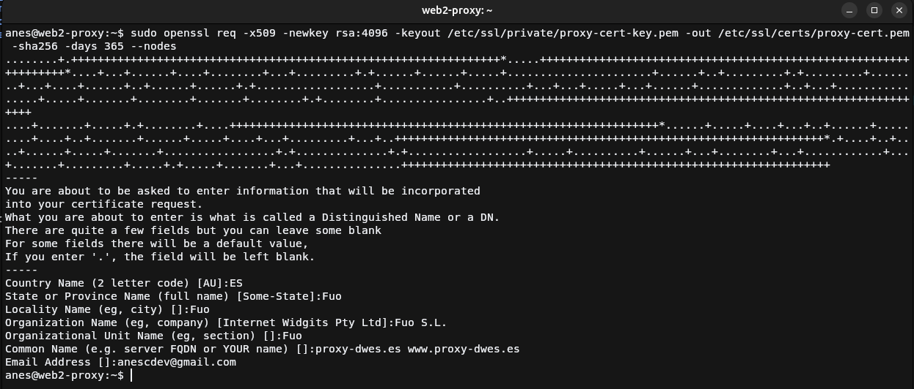
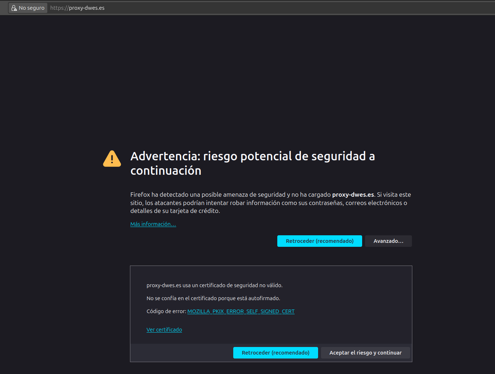
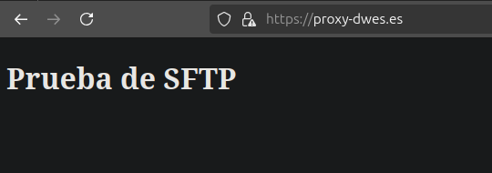
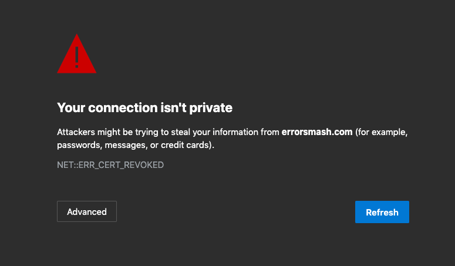

Practica 2.5: Proxy inverso y balanceo de carga con SSL en NGINX
Introducción
Para realizar esta práctica vamos a reutilizar la 2.4, ya que lo único que hay que hacerle es configurar el proxy y añadirle un certificado SSL, por lo que vamos a ello.
Hay que tener en cuenta que normalmente se harían con certificados obtenidos de una autoridad certificadora fiable, pero como no podemos debido a que para ello el primer paso es tener el servidor abierto a internet, vamos a hacerlo con un certificado autogenerado.
Creación del certificado
Para generar el certificado deberemos de ejecutar el siguiente comando, sustituyendo los valores entre menor y mayor que por la ruta que mejor venga para tu configuración, yo la voy a poner en la ruta donde Ubuntu guarda los certificados y claves privadas:
openssl req -x509 -newkey rsa:4096 -keyout <private_key_file> -out <certificate_file> -sha256 -days 365 --nodes

Muy importante que en los dos últimos pasos coloquemos los valores que nos piden, en el caso del penúltimo los nombres de host donde se usará el certificado y un correo válido.
Configuración del proxy
server {
listen 443 ssl; # Cambiamos puerto al por defecto del protocolo HTTPS y añadimos la directiva SSL
server_name proxy-dwes.es;
# Añadimos el certificado y su clave privada
ssl_certificate /etc/ssl/certs/proxy-cert.pem;
ssl_certificate_key /etc/ssl/private/proxy-cert-key.pem;
# Configuración de protocolo SSL
ssl_protocols TLSv1 TLSv1.1 TLSv1.2 TLSv1.3;
ssl_ciphers HIGH:!aNULL:!MD5;
location / {
proxy_pass https://servers_fuo;
add_header Host Proxy_Inverso_ManuelJesus;
}
}
Tras añadir estas directivas y cambiar el puerto, únicamente quedará reiniciar el servidor de NGINX para que se ejecute el servidor web con los nuevos cambios, esto con el siguiente comando:
Demostración

Al acceder a la web nos muestra un aviso de que el sitio encripta la información con un certificado autorfirmado, bien, eso significa que ha salido todo bien. Simplemente le damos a Avanzado... y al botón de Aceptar riesgo y continuar.

Como se ve, se muestra el contenido del servidor web a través del proxy protegido por HTTPS.
Cuestiones
Cuestión 1
Enunciado
Hemos configurado nuestro proxy inverso con todo lo que nos hace falta pero no nos funciona y da un error del tipo This site can't provide a secure connection, ERR_SSL_PROTOCOL_ERROR.
Dentro de nuestro server block tenemos esto:
server {
listen 443;
ssl_certificate /etc/nginx/ssl/enrico-berlinguer/server.crt;
ssl_certificate_key /etc/nginx/ssl/enrico-berlinguer/server.key;
ssl_protocols TLSv1.3;
ssl_ciphers ECDH+AESGCM:DH+AESGCM:ECDH+AES256:DH+AES256:ECDH+AES128:DH+AES:ECDH+3DES:DH+3DES:RSA+AESGCM:RSA+AES:RSA+3DES:!aNULL:!MD5:!DSS;
server_name enrico-berlinguer;
access_log /var/log/nginx/https_access.log;
location / {
proxy_pass http://red-party;
}
}
El error de esta configuración está en la directiva listen, que falta añadirle el parámetro ssl después del puerto para habilitar el SSL.
Quedaría de la siguiente forma la configuración
server {
listen 443 ssl; # cambio
ssl_certificate /etc/nginx/ssl/enrico-berlinguer/server.crt;
ssl_certificate_key /etc/nginx/ssl/enrico-berlinguer/server.key;
ssl_protocols TLSv1.3;
ssl_ciphers ECDH+AESGCM:DH+AESGCM:ECDH+AES256:DH+AES256:ECDH+AES128:DH+AES:ECDH+3DES:DH+3DES:RSA+AESGCM:RSA+AES:RSA+3DES:!aNULL:!MD5:!DSS;
server_name enrico-berlinguer;
access_log /var/log/nginx/https_access.log;
location / {
proxy_pass http://red-party;
}
}
Cuestión 2
Enunciado
Imaginad que intentamos acceder a nuestro sitio web HTTPS y nos encontramos con el siguiente error:  Investigad qué está pasando y como se ha de solucionar:
Es un error donde el certificado que usa el servidor NGINX ha sido retirado o revocado por la autoridad de certificación que lo ha expedido debido a diversos problemas, entre ellos dar información incorrecta durante la creación del certificado y haciéndolo inválido. También puede deberse a problemas de conexión a la lista de certificados revocados de la autoridad y al no poder acceder para comprobar si es un certificado válido, da ese error.
Para solucionar esto habría que expedir un certificado nuevo y asegurarse que todo es correcto